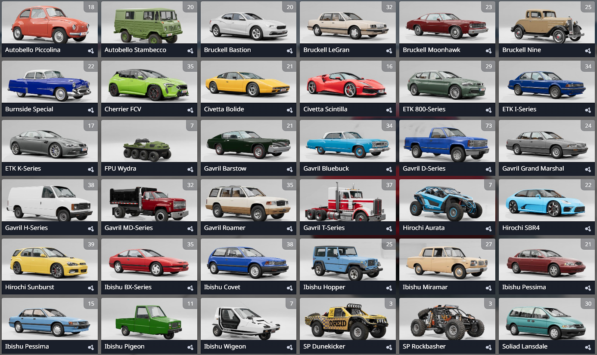
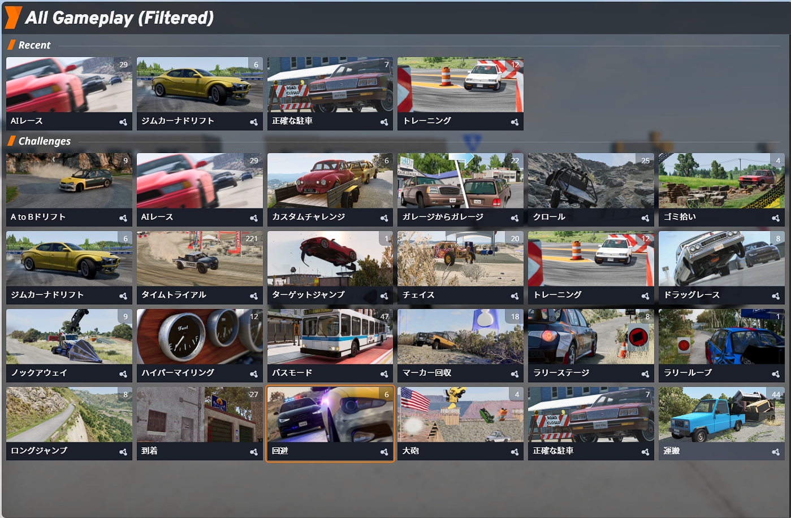
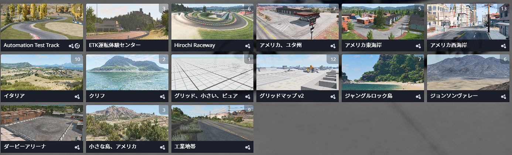
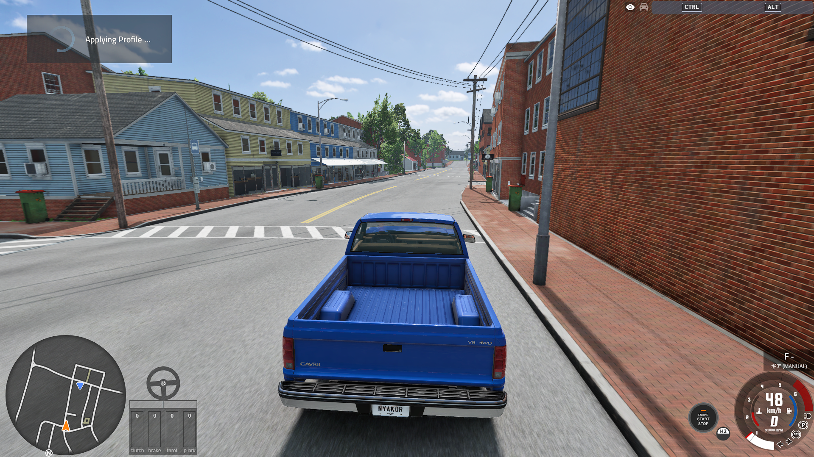

物理演算+車ゲーと言ったらBeamNG driveレビューします!
どうも皆さんこんにちはnyakorです。 今回レビューするゲームは物理演算がガチの...
サンドボックス×物理演算+車ゲーのBeamNG driveをレビューします！

画像引用先:steam
二回目の挨拶ですがnyakorと申します。BeamNG driveは車好きにはたまらないゲームだと思います。
BeamNGのおすすめ度は..?
★★★★★★★★★☆ （9 / 10）です!
値段のわりに遊べることが多すぎてやばいです。 クオリティが半端ないのが凄かったです。
まず凄いのは最初から入っている車の数です。


ほんとに数が多かったです。全部で35車種あって、スキンを変えたりエンジン変えたりカスタムすることで1000種類以上のバリエーションの車があるそうです。
BeamNGで一番すごいことは物理演算です。 物理演算がガチすぎて実際の車みたいですよね。毎秒2000回も計算が行われるそうです。
物理が凄いので事故も現実の衝突実験みたいです。
50kmだとちょっと前がつぶれるくらいですが...
100km出ていると前が完全に曲がってフロントガラスも割れました。
これは壁に突っ込んだだけですが速度が出ている方が前のところがグシャっと丸まっていく感じですね。車と車で正面衝突させると現実な感じでリアルになります。
BeamNGの挙動がリアル過ぎて現実の自動車メーカーにも使われたことがあるみたいです。
ぶつかったときの速度は172kmも出てるのでちょっと前がつぶれたってレベルじゃなく車同士が融合したみたいですよね。運転席も完全につぶれたのでこれは軽傷じゃすまないのではないでしょうか。
一秒間に2000回計算してると言いましたが一つの車に400から1000のノードという関節のようなものがあってノードとノードをつなぐビームという線は4000本から10000本もあるみたいでこれを毎秒2000回も計算してたらたしかにpcが超重くなるしリアルになるなと思いました。
つぎは現実だと52%とも占めてしまっているトラックと乗用車の衝突です。
↑これは驚きました。80kmくらいで乗用車の後部座席がつぶれるほど重くて力があるみたいです。車が吸い込まれるみたいでめっちゃびっくりしました。
このゲーム一人称視点もリアルで没入感はあります。でも遊んでから気づいたことなんですがあんまり30kmの時とかの30kmの時とかの速度感が少ないのと一人称のときの車の速度メーターが見ずらかったですね。
すみませんやっぱ意外と速度感あるかも..これで事故ったらマジでビビります。( ´∀｀ )
視点がガタガタしたり揺れるのががリアルだと思いました。でも運転しながら視点を動かさないといけないので大変だと思いました。
またクエストっていうか挑戦みたいなのがあってそれも種類が多いのに作りこみもしっかりしてるのでやってみてください。ちなみに有志のmodで首都高マップあるので遊んでみてください! 一番下にリンク張っときます

マップの数も10個くらいあってマップはほんとに作りこみがすげえなって感じです。オープンワールドですね。

どんな感じか見せます。人力で作れることに驚きです。

イタリアの古い街並みがいい味出してますね。

アメリカ西海岸の架空の場所です。こういうところに住んでみたいですね。

これはレース場です。ここでAIとレースできるのですがAIがちゃんと強いです。
正直マップの作りこみはすごいんですがまだゲーム全体的に最適化が進んでなくて重い部類のゲームです。あとちょっとまだ最新のゲームには画質で負けてる気がします。
またこのゲームの作りこみ異常なところは、車のエンジン音だったり衝突音だったり音の作りこみがえげつないです。聴いてみてください。
こういう感じの車に乗ってみたいな
やっぱ音がいいです。
エンジンの音ほんとにリアルな感じですよね。当たり前かもですが現実の車の音使ってるのかな？
ということでどうだったでしょうか？最後にいいところとマイナスなところを正直に書いていこうと思います。
いいところ
本当になんでもできるところです。サンドボックスなのでカーチェイスしても破壊しつくしたり非公式のマルチプレイで遊んだり有志のmodで遊んだり...やることが無限なところがいいですね。
物理演算のリアルさが異常なところです。これまでリアルな車ゲー見たことないです。
有志のmodの数が凄まじいことです。5万個は余裕であるし実在する車もダウンロードできます。
マップの作りこみも異常なほどよくできていて広くて細かいです。
音もこだわりが異常です。例えば事故ったときになるガッシャーンという音はリアルタイムで金属の音とかプラスチックの音と合成されてできる音だそうです。
重力とか時間とか風量とか雲の多さだったりも細かく調節できるところです
マイナスなところ
PCの推奨スペックが高すぎるところです。推奨でもCPUはAMD Ryzen 7 3700X / Intel Core i7 9700でメモリが32GBです。グラフィックボードはAMD RX 6700 / Nvidia GeForce RTX 3060で今のPCは値段が爆上がりしていて高いので推奨スペックを満たすPCを買うとなると15万円から30万円くらいかかります。ちなみに僕のPCはCPUがi5 10400fでメモリが32GBでグラボがRTX 2070SUPERなんですがBeamNG中設定で60fpsしかでないです。画質を犠牲にするとfpsが伸びて軽くなります。
ストーリーやゴールがなくてサンドボックスでいつでもなんでもできるのはいいんですが飽きるがもしれません。有志のmodもいいんですがセキュリティのリスクのもあるので注意が必要です。飽きないようにするならシナリオっていう挑戦みたいなのをやれば飽きづらくなると思います。
設定画面とかが初心者には複雑なところです。あとUI全体的に動作がもっさりしてるのでストレスたまるかもしれないです。
物理演算に全振りしてるのでグラフィックは最新のものには劣るかもしれません。まあある程度はキレイですけどね。
リアルなのはいいんですが、リアルすぎてレースとがやる人にはやりずらいかもしれないです。
こんな感じです。僕的には★9/10にするくらい作りこみが凄くて車好きに刺さりそうなゲームだなと思いました。
2026年 4/1時点だと2800円でこの作りこみならこのくらいかなって感じの値段です。
最低価格は-33%の1876円です。でもめったにこの値段のセールは来ないみたいで、セール来るとき20%オフくらいです。
今回はBeamNGをレビューしました！どうでしたか？物理演算要素が凄いのでやってみてください。ハンドルコントローラーなど使うとよりリアルになりますよ。ではよい一日を！
Tokyo's Shuto Expressway (BeamNGdriveの非公式マップ 公式のサイトなので安全な可能性が高い)

ホームに戻る